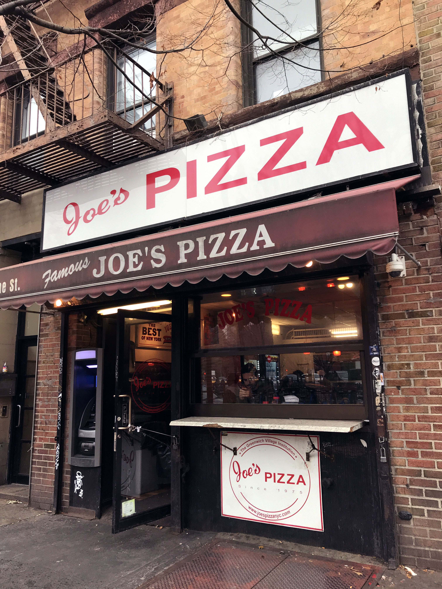
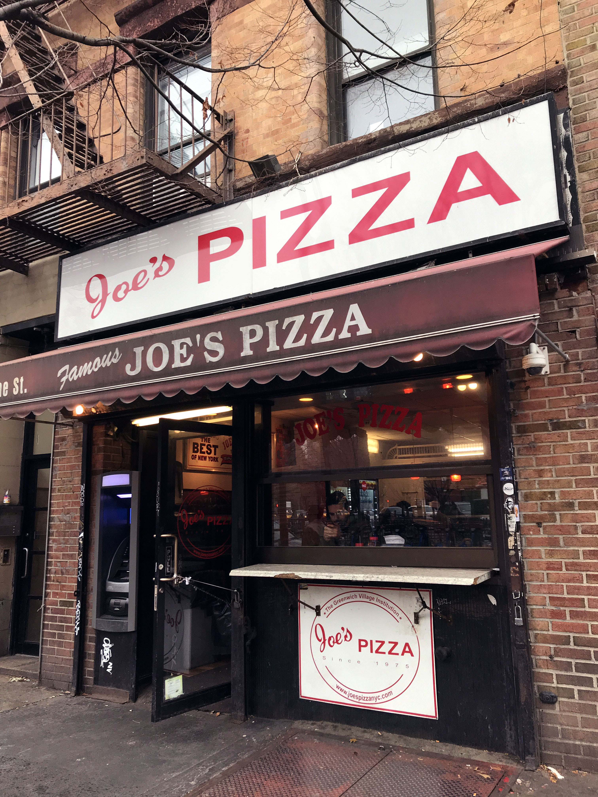

My Favorite Spots in NYC
favorite place to hang out: central park
Best Pizza: Joe's Pizza
It is just a classic nyc slice. I really like how thin and crispy it is.
Not-So-Great Thing About NYC
it can be really dirty, as well as overcrowded
It is just a classic nyc slice. I really like how thin and crispy it is.
it can be really dirty, as well as overcrowded
